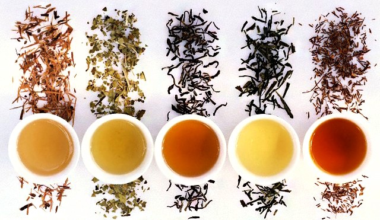
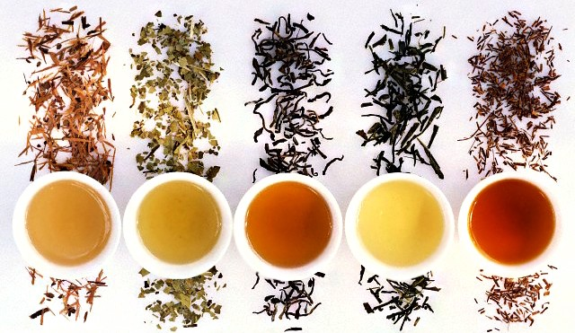

공부하기 메뉴
1. 개발환경 (서버와 클라이언트 구조의 웹프로그램)
2. UI 제공화면 공부 - html
3. html 개발환경 구성
프로그램 : visual Studio Code
언어형식 : utf-8 (eunkr도 같이 공부해 두세요)
4. 프로그램 설치 후 한글팩 설치, live Server 설치
기본브라우저 크롬으로 설정
5. 태그와 태그의 속성을 중심으로 공부한다.
어떤 테그인지 속성은 있는지
-
웹프로그램의 이해
- 개발환경
- 벡엔드와 프론트엔드
프로그램의 이해
- UI
- HTML 이해
- 프로그램 설치하기
 

|
| 뿌리차 |
인삼차 |
과일차 |
수정과 |
잎차 |
뽕잎차 |
| 당귀차 |
유자차 |
감잎차 |
| 생강차 |
구기자차 |
솔잎차 |
| 칡차 |
대추차 |
국화차 |
| 둥굴레차 |
오미자차 |
이슬차 |
| 마차 |
매실차 |
기타 |
두충차 |
| 곡물차 |
보리차 |
모과차 |
영지버섯차 |
| 옥수수차 |
산수유차 |
귤강차 |
| 현미차 |
탱자차 |
쌍화차 |